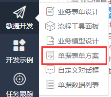
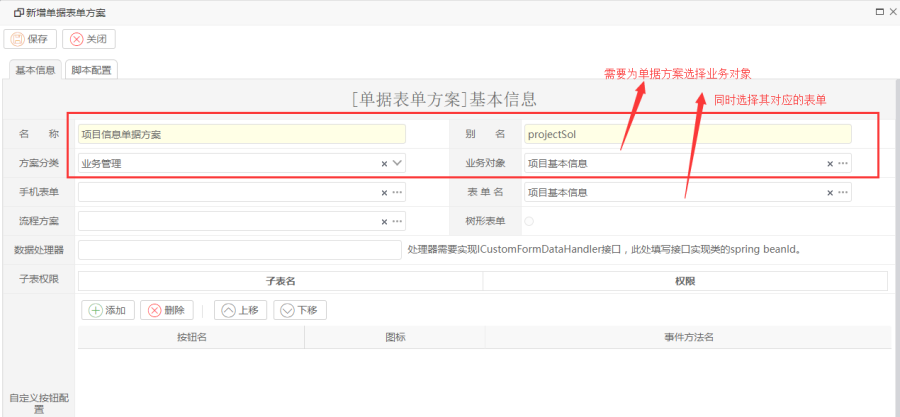
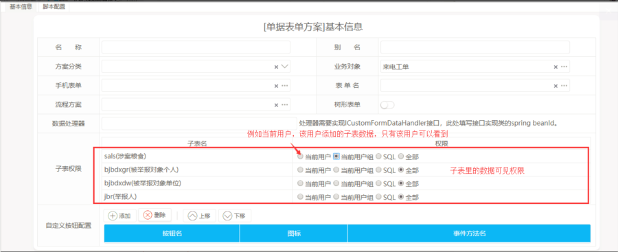
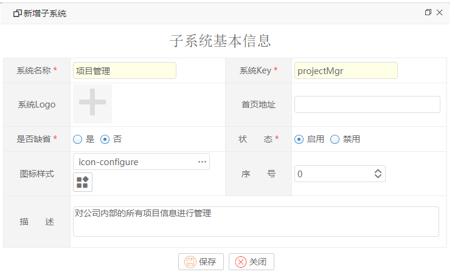
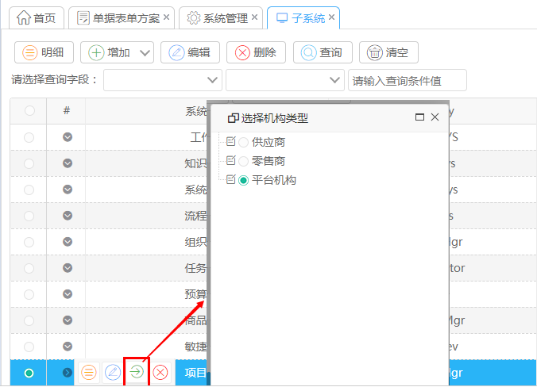
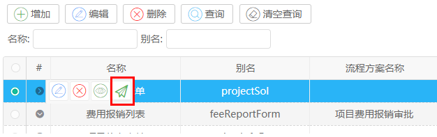
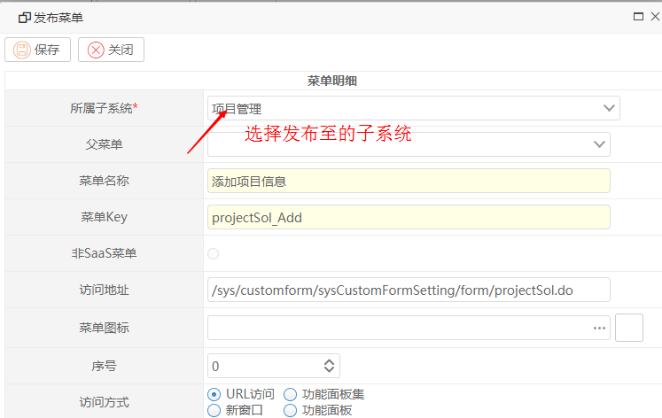
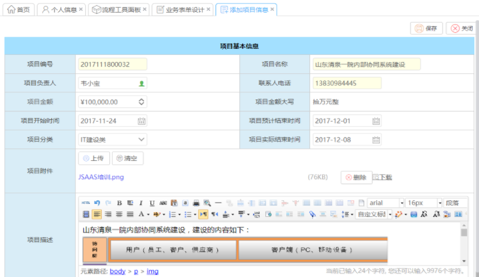

若需要把以上单据发布至菜单中提供录入及管理，添加为该表单增加表单方案。
表单方案提供了比表单更多的处理细节，如可以允许你为表单增加不同的操作按钮，并且授权给不同的人员。允许你在填写表单完成后，可以执行对应的数据同步或其他业务逻辑的操作。允许你对操作界面的子表的数据进行过滤等。操作步骤如下：
第一步：生成单据表单方案

选择菜单 敏捷开发--》单据表单方案--》添加按钮，则进入表单方案，如下所示：
填写表单方案名称，英文的标识键，并且选择对应的业务对象（即以上表单的元数据模型），选择以上的展示表单，其他信息可以不填，点【保存】

如果表单有子表：

说明：
数据处理器：系统提供数据接口，客户自定义类并实现ICustomFormDataHandler接口，并在spring配置文件配置bean即可，可以对表单数据进行自行操作。
子表权限：管理子表数据的可见权限
自定义按钮：给表单方案设置自定义按钮，事件方法名自定义，具体方法在表单里面定义。
第二步：增加子系统（可选）
目前系统的菜单是存放于子系统中，在本教程中，我们增加一个【项目管理】的子系统，新增加的功能则放置于该子系统中。
操作路径：系统配置--》子系统》增加按钮。

同时把子系统授权给【平台机构】类型。

点击【确定】按钮即可。
第三步：发布项目信息的增加功能至菜单中
进行单据表单方案列表，点击对应行的列表中的【发布】按钮，如下所示：

在弹出菜单，配置发布的菜单

发布完成后，刷新系统，作为管理员，即可以在左边菜单中看到如下菜单 ：
当我们点击该菜单时，即进入项目信息的添加界面：

点击【保存】按钮，则把该表单的信息发布至表单对应的物理表中。